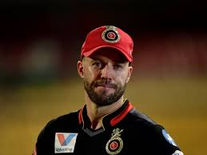

Virat Kohli

AB de Villiers

Devdutt Padikkal
In September 2007, the Board of Control for Cricket in India (BCCI) announced the establishment of the Indian Premier League, a Twenty20 competition to be started in 2008. The teams for the competition, representing 8 different cities of India, including Bangalore, were put up on auction in Mumbai on 20 February 2008.
The Royal Challengers Bangalore are a franchise cricket team based in Bangalore, Karnataka, that plays in the Indian Premier League. It was founded in 2008 by United Spirits and named after the company's liquor brand Royal Challenge.
he Bangalore franchise was purchased by Vijay Mallya, who paid US$111.6 million for it. This was the second highest bid for a team, next only to Reliance Industries' bid of US$111.9 million for the Mumbai Indians. The brand value of Royal Challengers Bangalore was estimated to be ₹595 crore (US$83 million) in 2019, according to a survey conducted by Duff & Phelps. Diageo India CEO Anand Kripalu will take over the RCB chairmanship from Sanjeev Churiwala beginning 1 October.